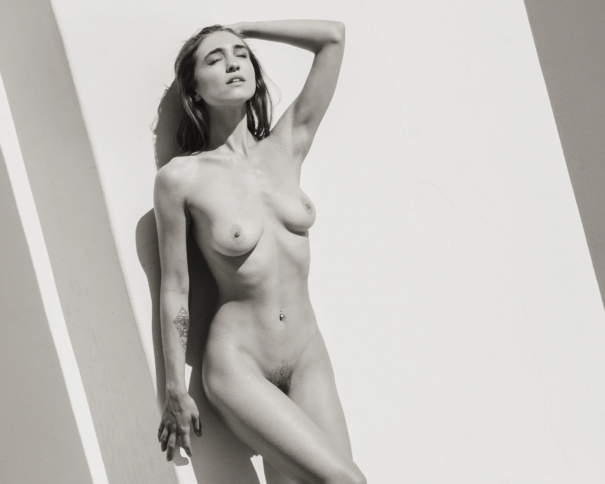
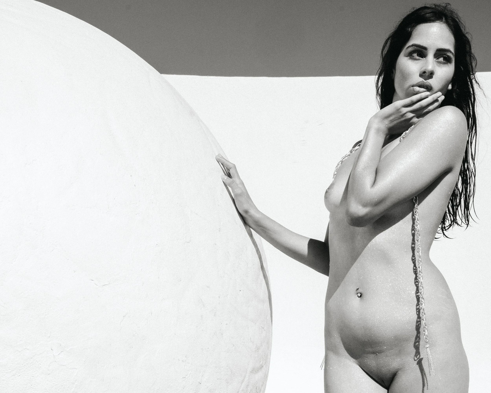

Shallow pools turned into mirrors, picking up color from the walls and fragments of sky. We used the water less as a prop and more as a third character — catching doubled silhouettes, bent lines, and the moment when one model moves and the other chooses to stay still.
The best part of working with two models is the in-between: shared glances, tiny negotiations of space, the way a pose becomes a reply instead of a statement. Weeses Pieces gave us a controlled chaos of shapes; Model1 and Model2 gave it attitude and human scale.


The


This shoot was less about matching and more about echoing — letting each model stay fully themselves while the architecture tried to flatten them into design elements. The tension between those two forces is where the good frames lived.